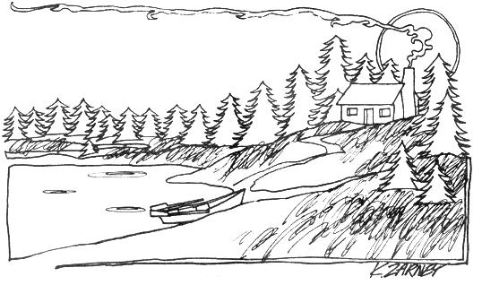

Have you ever dreamed of living the Good Life out in the country far from the city's noise and pollution? Do you want to spend your life hiking, swimming, hunting, fishing, camping and observing wildlife in its natural habitat? Would you like to raise your own produce and livestock . . . and raise it free of pesticides and chemicals? And most of all, would you like to get paid for doing all this while you protect natural areas from the dangers of "civilization"?
I know. . . it sounds impossible, but a number of lucky folks are living their lives just this way right now. I'm one of them, and the key to our dream-lives is the job we all share . . . a job that has many names: Caretaker, Ranger, Forester, etc,
There are, you see, large areas of uninhabited and occasionally remote land owned by governments, corporations and even individuals. Some of these tracts are productive and are leased to farmers and others at a reasonable figure. Much of the land I refer to, however, is non-productive and the individuals and corporations that own such acreage are happy to pay a trustworthy resident (or, at very least, give him rent-free quarters) for protecting and maintaining the preserves, estates or whatever. The caretakers for government-owned parks, forests and recreational areas are usually furnished both living accommodations and a salary.
I work as a combination Park Ranger & Caretaker at a city-owned reservoir several miles from a small town. I've visited similar parcels of land around the country and found that, in most cases where non-owners are paid to live on and protect a tract, a rent-free residence is supplied with the job. Nearly all such caretakers-even those in state parks-are provided room for at least a small garden and sometimes a good-sized piece of acreage is made available for the employee to farm. Such fringe benefits, I feel, more than compensate for the-in most cases-low salary.
Now I'll admit that the outdoor jobs I'm describing (actually, they're more "lifestyles" than employment) are few and far between. They're so perfect for nature lovers, though, that they're worth going after. . . or creating!
Yep. If you can't find the kind of setup you're looking for, you can often create it. Just locate the owner of a large piece of country property and point out the dangers of forest fires, vandalism, trespassers and poachers. If you can work with your hands, offer to improve the grounds (by constructing fences, outbuildings, roads, drainage ditches, ponds, etc.) during your stay. Make a straightforward business deal, in other words, to live on the property, maintain and protect it.
There's always at least one drawback to everything, I suppose, and in this case it's the word "protect". If you're prejudiced against police work, maybe you should skip this whole idea because "protecting" involves law enforcement to some extent. You may even be required to wear a uniform and cut your hair in some cases and-on top of that-most of the Civil Service openings in this field require special education in biology, forestry or whatever. Doing the caretaker thing, then, won't necessarily-but definitely can -have the same kind of overtones as any other "straight" employment. In fact, you may have to come on pretty square before many owners, governmental or private, will entrust their land to you.
The sacrifice (if any) involved, though, is well worth making. Remember, you're not just getting money in return. . . but a whole way of life. Protecting and preserving the natural beauty of the land is one kind of "police" work that's actually gratifying . . . because you're fighting a real crime, not interfering with private matters.
And once you've settled in to your new employment (lifestyle), you'll have plenty of time and opportunity to pursue your own interests . . . as long as you keep the place in good shape and spend most of your time close to home base. Best of all, when the park or whatever isn't overrun with visitors from the city, you'll have it all to yourself. You can then play at being a country squire . . . or a dirt farmer . . . or just relax into quiet communion with nature.
|
 |
|
|